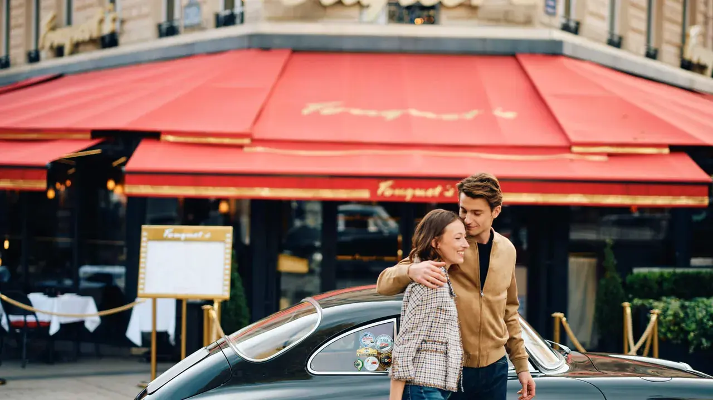
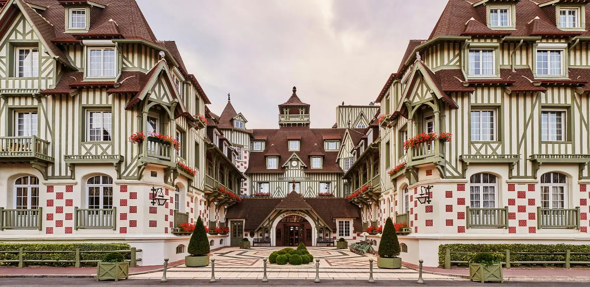
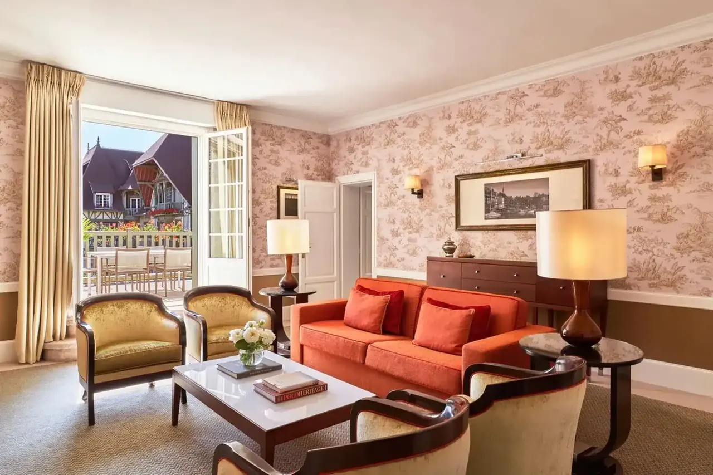
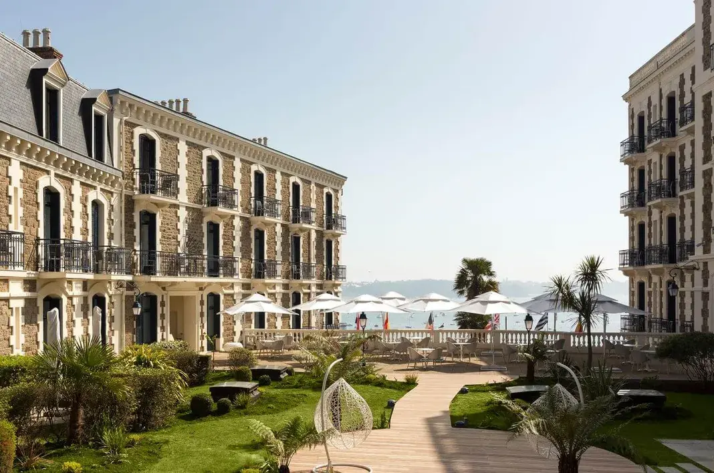

Paris is always a good idea and we recommend elevating your trip to the City of Lights by extending your stay and exploring the chic coastal towns of northern France. Soak up the grandeur of Paris before hopping over to the stylish seaside resorts of Deauville and Dinard to discover their art, Belle Époque architecture and crystal-clear seas.
If an itinerary that gracefully marries cultural immersion with serene coastal scenery is your kind of getaway, a multi-stop journey encompassing the three destinations while staying in elegant surroundings at Barrière's stylish hotels is the answer. Here's how to plan a three-stop sojourn to northern France...
Begin in Paris
Start your tour in the timeless heart of France, where world-class art collections, romantic spirit and the finest dining await. Discerning travellers in search of an urban retreat will adore Maison Barrière Vendôme, a discreet yet luxurious bolthole with only 26 rooms, suites and apartments. The hotel is a quiet sanctuary just moments from the Jardin des Tuileries and Louvre.

Maison Barrière Vendôme
A discreet yet luxurious bolthole with only 26 rooms, suites and apartments. A quiet sanctuary just moments from the Jardin des Tuileries and Louvre, offering a Parisian residence-like atmosphere.
Enquire About This PropertyWhether you're staying for one night or a few, you'll want to spend your time exploring this prime location, before retiring to the hotel to enjoy the Parisian residence-like atmosphere.
For those who prefer a gourmet destination, Hôtel Barrière Le Fouquet's Paris, famed for its brasserie Fouquet's, is the place for you. Located between Champs-Elysées and Avenue George V, this is another enviable base for the Paris leg of your exploration.


Hôtel Barrière Le Fouquet's Paris
Home to the legendary Fouquet's brasserie where Chef Pierre Gagnaire serves up classics like Champs-Élysées onion soup, duck foie gras and crêpes suzette with a sophisticated twist.
Enquire About This PropertyContinue to Deauville
For a breath of fresh air, head west to Deauville in just over two and a half hours. The upscale seaside resort has attracted well-heeled travellers since the 19th century and hosts an array of events, from horse races and polo matches to the glamorous Deauville American Film Festival.


The venerable Hôtel Barrière Le Normandy Deauville, with its half-timbered Anglo-Norman architecture, embodies the quintessential Deauville experience, blending classic grandeur with contemporary comforts.
:quality(80))
Hôtel Barrière Le Royal Deauville
Housed in a magnificent 1913 Belle Époque building close to Deauville's sandy beach, this is the accommodation of choice for Hollywood stars and polo players. Don't miss dining in the resort's celebrated restaurants and strolling along the iconic Les Planches boardwalk.
Enquire About This PropertyLittle Emperors Exclusive
Barrière guests staying in Paris and Deauville receive a complimentary private guided tour of Les Planches boardwalk—an experience reserved exclusively for our clients.
Finish in Dinard
A two-and-a-half-hour car journey further west towards Brittany's captivating Emerald Coast brings you to the charming town of Dinard, with its dramatic cliff-top walks and elegant villas. A more rugged seaside destination than Deauville, yet equally stylish, Dinard has a striking coastline that was once frequented by aristocrats.


Grand Hôtel Dinard Barrière
Standing proudly overlooking the sea with a heated swimming pool, massage jets and views over Saint-Malo Bay. The Shiseido Ginza Tokyo Spa will inspire you to relax in stylish surroundings, while cocktails at Les Terrasses du 333 provide the perfect sunset spot.
Enquire About This PropertyDinard is an excellent base for getting to know the untamed beauty of Brittany, whether you're planning a trip to explore the villages along the Rance River, or discover the history of Saint-Malo.
"Just over an hour away, Mont Saint-Michel makes a spectacular addition to the journey—a UNESCO World Heritage Site not to be missed."
Little Emperors Exclusive
Barrière offers complimentary sea bus transfers from Dinard to Saint-Malo when you combine a stay in their Paris and Dinard hotels through Heirloom Holidays.
Your Itinerary
Paris
Explore the Louvre, stroll the Tuileries, dine at Fouquet's, and experience the magic of the City of Lights from your elegant Barrière hotel.
Deauville
Beach walks along Les Planches, Belle Époque architecture, world-class dining, and the glamour of this legendary seaside resort.
Dinard & Mont Saint-Michel
Dramatic coastal walks, spa indulgence, and a day trip to the unforgettable Mont Saint-Michel before your journey home.